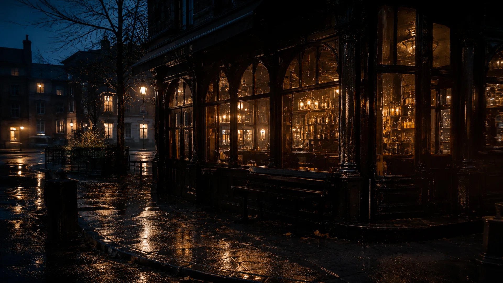
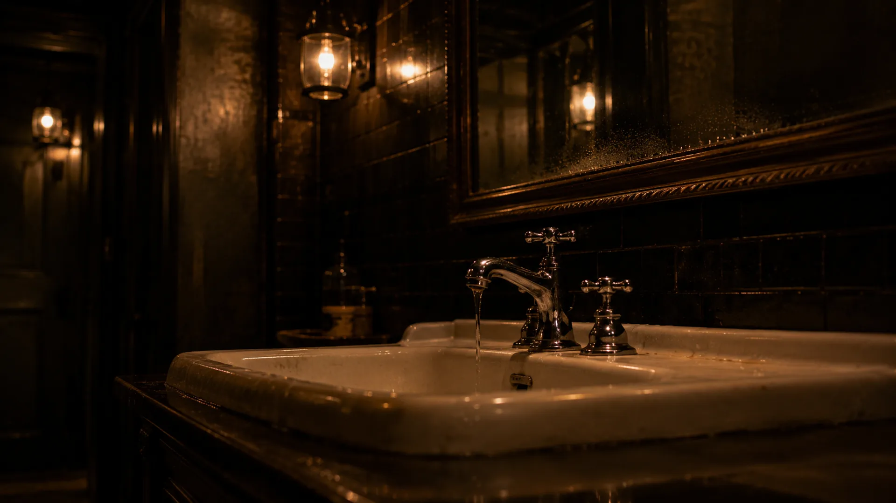
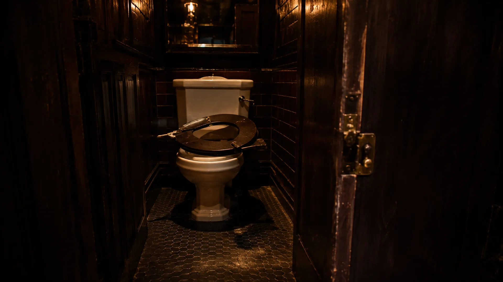
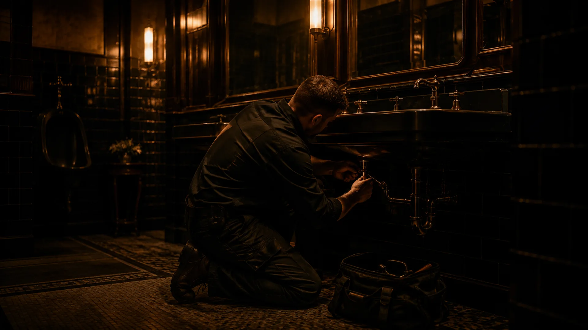
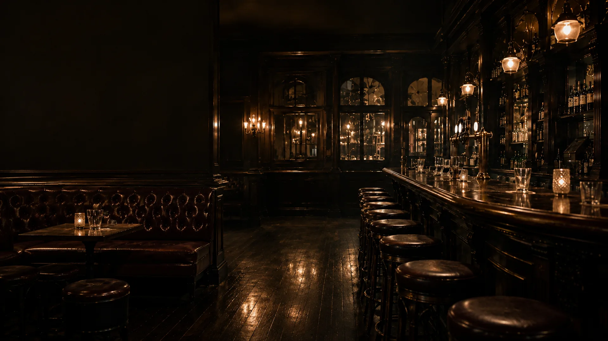
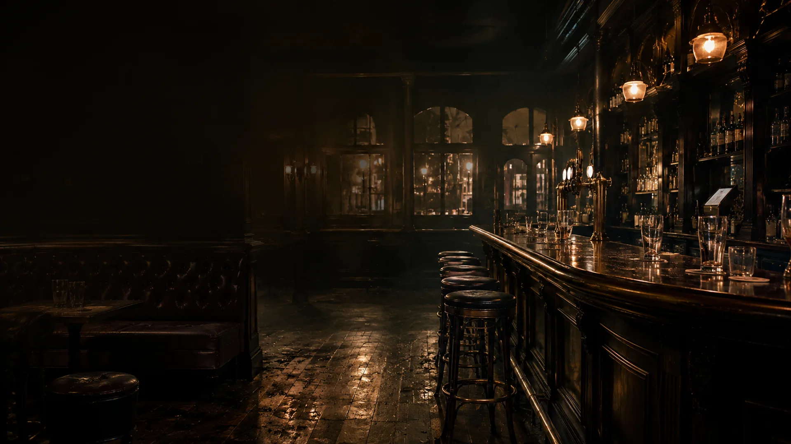

Sunday night ends.
The last glass is collected. The music stops. The doors finally lock.
One number. One team. No Monday list.
After the weekend





The last glass is collected. The music stops. The doors finally lock.
And the small things that survived another weekend suddenly become obvious.
Not an emergency. Not yet. But it will still be dripping when Monday arrives.
A loose seat. A sticking door. A damaged table. Ten little jobs with nobody to call.
One maintenance contact who understands pubs, responds quickly and gets the list moving.
Quietly maintained. Properly managed. Ready for the next customer through the door.

A better way to maintain a pub
Just Pubtain.
Pubtain cover
Pubtain Cover
A dependable first call for the everyday faults that steal management time, irritate customers and grow when ignored.
A planned post-weekend visit to clear the snagging list before it becomes next weekend’s problem.
For faults that cannot wait for the next visit. One message, one point of contact and a clear response.
Washroom refreshes, decorating, flooring repairs, joinery and practical upgrades delivered around trading.
Membership scope, included labour and response times are agreed for each venue. Materials, specialist works and larger projects are quoted separately.
What we maintain
Leaks, taps, toilets, seats, flushes, seals, locks, hinges, doors, shelves, tables, wall damage, paintwork, silicone, tiles and the hundred other things that keep a pub working.
How it works
We meet at your pub, understand the building and agree the maintenance priorities, access arrangements and cover level.
Message one Pubtain contact. Add photographs when useful. We triage the issue and plan the right response.
Work is organised around trading wherever possible, recorded clearly and followed through without management chasing.
Before the next round
Talk to Pubtain
We are starting with independent pubs across London. Send the venue details and we will arrange an initial maintenance walk-through.
hello@pubtain.com